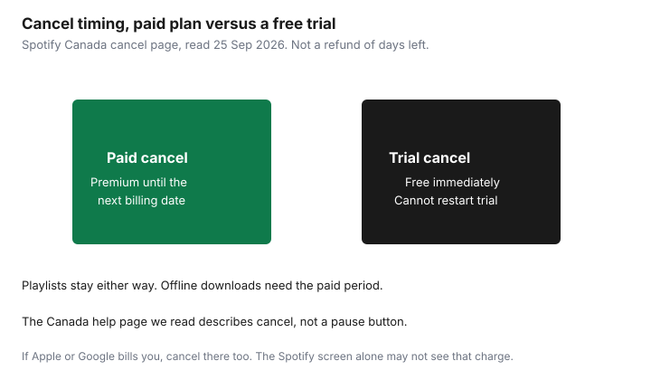

Subscriptions · Canada
How to Cancel or Pause Spotify Premium in Canada Without Losing Playlists
Deleting the Spotify app does not cancel Premium. The charge belongs to the account that pays, which may be Spotify itself, Apple, Google, or a phone company. Spotify’s Canada cancel page says you cancel on the account page. Premium you have already paid for runs until the next billing date, and then the account becomes free. Playlists stay. Offline downloads do not. This page is that sequence, including the family-plan twist: a member who taps cancel leaves the seat, and the household bill continues.
Plan prices and the Family-versus-Individual math are the comparison guide. If the receipt is an Apple trial, the 24-hour rule is the trial checklist. After you cancel, confirm the card on the hidden-charges pass.
Disclosure: This guide has no natural affiliate offer. Saving Optimizer does not claim a partnership with Spotify, Apple, or Google. Education only. The confirmation on the account page is the cancel.
Key takeaways
- Cancel on the Spotify account page: Manage your plan, then Cancel subscription. The mobile app is a poor place to assume the job is done.
- Spotify’s Canada cancel page does not describe a pause product. A paid cancel keeps Premium until the next bill, then free. A zero-price trial ends immediately and cannot be reactivated.
- The plan manager cancels the Family or Duo bill. A member who follows the same clicks only removes their seat. Tell the other people before you do it. Managed child accounts move to the free plan.
- Playlists and saved music stay on the free account. Offline downloads need Premium. Wrapped is a campaign, not a folder you pay to store.
- A plan billed by Apple, Google, or a carrier is cancelled with that partner. Wait until the account is free before you start a direct Spotify plan, or you can pay twice.
Cancel on spotify.com Account then Manage plan—not only from the mobile app
Spotify’s help page “How to cancel Premium plans,” read 25 Sep 2026, is two steps. Go to Manage your plan. Select Cancel subscription. You want the confirmation, not a screen you backed out of. The same page says you can also cancel by a form sent to Spotify. Use the account page first, because you can see the plan end there. Do this in a browser, signed into the account that receives the receipt. The phone app is where people listen. It is also where a family member can be signed into a seat that cannot see the payment method.
If there is no way to change the plan, Spotify says the plan is with a partner, such as a mobile or internet provider. Open Manage your plan, check Payment, and use the contact link. Cancelling inside Spotify will not stop a partner bill, and cancelling a partner you do not actually use will not stop a direct Spotify bill. The payment line tells you which one is live. If the account page says you are on free and the card is still charged, Spotify says you are likely logged into the wrong account. Try the other email before you call the bank.
The premium FAQ says Spotify sends a reminder seven days before a trial ends. That reminder is not the cancel. Cancel yourself, then look for the email that the plan will not renew. Put that email with the subscription sheet.
Pause options where available vs full cancel timing
On the Canada cancel page we read, there is no pause button. The paid path is a cancel that keeps Premium until the next billing date. Spotify’s refund page says the same thing: cancel any time, keep what you paid for, and the account stays on Premium until the end of the billing period, then becomes free. You are not refunded the days left in the month. Those days are the closest thing to a pause. If you will want Premium again next month, you still cancel, and you rejoin when you want it. Rejoining may be at the current price, not at an old promo. The premium FAQ says a trial is only for people who have not had Premium before.
A zero-priced free trial is the exception. Cancel during that trial and the account switches to free immediately. Spotify says a zero-priced trial cannot be reactivated. Do not cancel a trial on the morning of a trip if you still need offline music that afternoon. Cancel it the day you are willing to lose Premium, at least before the trial converts. The trial checklist’s Apple rule, 24 hours before the trial ends, applies when Apple is the biller. Spotify’s own trial language is “before it ends,” and the conversion is immediate once you cancel.
YouTube’s help pages describe a pause for some YouTube memberships. That is a different company. Do not look for a Spotify pause because a YouTube screen had one. If a pause ever appears on your Spotify account, read the resume date and the price you will be billed on that date before you use it. The page we read did not offer it.

Family plan manager vs member: who can cancel whose seat
The plan manager is the only person who signed up and who pays. Spotify’s family help says the manager can add or remove members and cannot join another plan. To cancel the whole Family or Duo plan, the manager uses the same Manage your plan, Cancel subscription path, and tells everyone else. Premium benefits for members end at the next payment date. Managed accounts for young listeners move to the free, ad-supported plan. A child who had offline music for the drive to school will not have it the day the plan ends. Download what you are allowed to keep, or plan the car, before that date.
A member who follows those cancel steps does not cancel the family’s bill. Spotify says it removes that member from the plan. The manager is still charged $23.99 for Family or $19.99 for Duo, at the list prices read 25 Sep 2026, until the manager cancels. If you are a member who wants the household to stop paying, ask the manager. Leaving the seat is not the same request. Members also can only switch plans once every 12 months. Hopping off Family and back on next month may be blocked. Confirm the address rule before you promise a seat to someone who does not live with you. The manager’s invite asks them to enter the same home address.
| Who is signed in | What Cancel does | What still bills |
|---|---|---|
| Plan manager | Ends the Family or Duo plan at the next payment date | Nothing further, after that date, if the confirmation says so |
| Plan member | Removes that member’s seat | The manager’s plan, until the manager cancels it |
| Partner plan (carrier) | Spotify may show no cancel button | The partner, until you cancel with them |
What happens to playlists, downloads, and Wrapped after cancel
Spotify’s cancel page says you keep your playlists and saved music, and you can still log in and play with ads. The premium FAQ uses the same sentence. The library is the account, not the paid month. You do not need to export a playlist to a spreadsheet to “save” it from cancellation. You do need to be logged into the same account. A cancel on a second email you forgot you created does not touch the playlists on the first one, and it also does not stop the first one’s bill.
Downloads are the part that stops. Offline listening is a Premium feature on the comparison table. When the account is free, those files do not keep playing without a connection. Before the billing date, if you have a trip, either stay paid through the trip or accept that the drive will be online, a podcast, or a library download. Wrapped is Spotify’s year-end campaign. The cancel page does not say you lose a Wrapped archive, and it does not say Premium is required to view it. Treat playlists and liked songs as the library you keep. If a particular Wrapped story matters, screenshot it. Do not keep paying $13.99 a month, the Individual list price we read, as a storage fee for a recap.
Switching billing from Apple/Google to Spotify direct carefully
Spotify’s change-plan help is the order that avoids two bills. If a partner, including a phone company, currently provides Premium, cancel with the partner and wait until the Spotify account shows free. Then sign up for the direct plan. The other direction is the same shape: if you pay Spotify directly and want a partner deal, cancel the direct plan, wait until the account is free at the next billing date, then activate the partner offer. Starting the new plan while the old one is still in its paid month is how a household pays Apple and Spotify for the same account, or a carrier and Spotify.
Apple’s own cancel path, support page published 14 Sep 2026, is Settings, your name, Subscriptions, the subscription, Cancel Subscription. On a Mac it is the App Store, your name, Subscriptions. If Google Play billed you, the Play subscriptions list is the cancel, and uninstalling the app does not do it. The trial checklist walks those store paths. After the store says cancelled, go back to the Spotify account page and read Payment. Free, with no partner link, is the moment you may start a direct plan. A gift card can fund that direct plan. It does not cancel the Apple subscription by itself.
Calendar reminder if you only want Premium for travel months
Some households want offline music for a holiday and ads the rest of the year. Treat those as booked months, not as a personality. Count the billing date, not the flight. If the card bills on the 4th and you fly on the 10th, the month that contains the trip is already paid or about to be. Cancel so the paid period covers the days you will be offline, and so the next billing date falls after you are home and willing to be on the free plan. A cancel the night you land is a month late if the bill already ran that morning.
Put two reminders on a shared calendar. One, seven days before the billing date that should be the last one, which matches Spotify’s own trial-reminder timing and the audit guide. Two, the day you return, to check the account says free. If you only needed Premium for the car, the three-month test will tell you whether travel months are real or whether you have been paying all year for a habit you already replaced with podcasts. Duo and Family make this less neat: the manager’s cancel affects every seat. Do not end a student’s Premium because one adult took a trip. End the seat that travelled, or pick a month when the whole household can live without offline music.
Sources & date stamps
- Spotify Support, “How to cancel Premium plans,” “Refund policy,” “How to change Premium plans,” “Family plan,” and “Canceled but still charged,” read 25 Sep 2026. Paid Premium runs to the next billing date. A zero-price trial ends immediately and cannot be reactivated. Members who cancel leave the seat. Managers cancel the plan. Partner billing is cancelled with the partner. Playlists and saved music remain.
- Spotify Canada premium FAQ, read 25 Sep 2026: cancel on the account page; seven-day trial reminder; Individual $13.99, Duo $19.99, Family $23.99. Those prices are list prices, not a tax-inclusive quote.
- Apple Support, “Cancel a subscription from Apple,” published 14 Sep 2026: Settings, your name, Subscriptions. A trial cancelled with Apple should be cancelled at least 24 hours before it ends.
Frequently asked questions
Does deleting the Spotify app cancel Premium?
No. Spotify's Canada cancel page says to open Manage your plan and select Cancel subscription on the account page. If there is no cancel option, a partner such as a phone company is billing you. Cancel with them.
Can I pause Spotify Premium in Canada?
The cancel page we read does not offer a pause. A paid cancel keeps Premium until the next billing date, then the account becomes free. You are not refunded the days left. A zero-price trial ends immediately and cannot be reactivated.
I am on a family plan and I tapped cancel. Did the bill stop?
Only if you are the plan manager. A member who cancels removes their own seat. The manager is still billed until the manager cancels. Tell the household first. Managed child accounts move to the free plan.
Will I lose my playlists?
Spotify says you keep playlists and saved music and can listen with ads. Offline downloads need Premium. Wrapped is a yearly campaign, not a library you pay to store. Screenshot a recap if you want it. Stay logged into the same account.
How do I move a plan from Apple or Google onto Spotify direct?
Cancel with Apple or Google, wait until the Spotify account says free, then start the direct plan. Starting the new plan while the old month is still paid is how you pay twice. Apple's path is Settings, your name, Subscriptions.